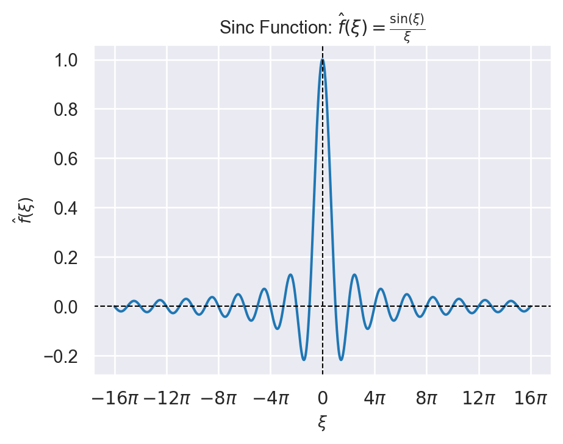
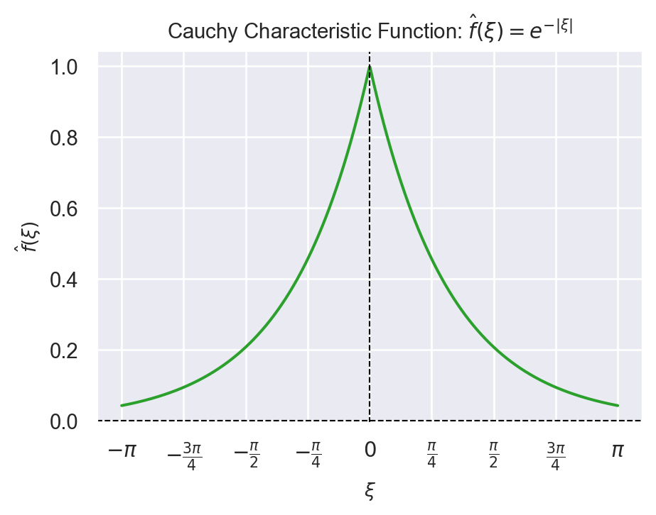
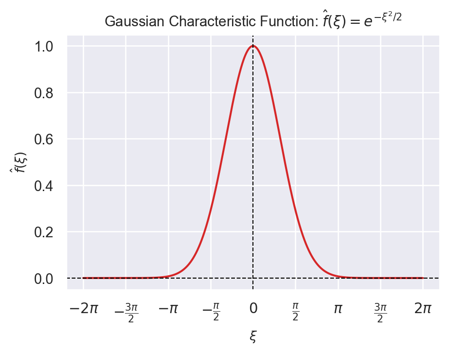
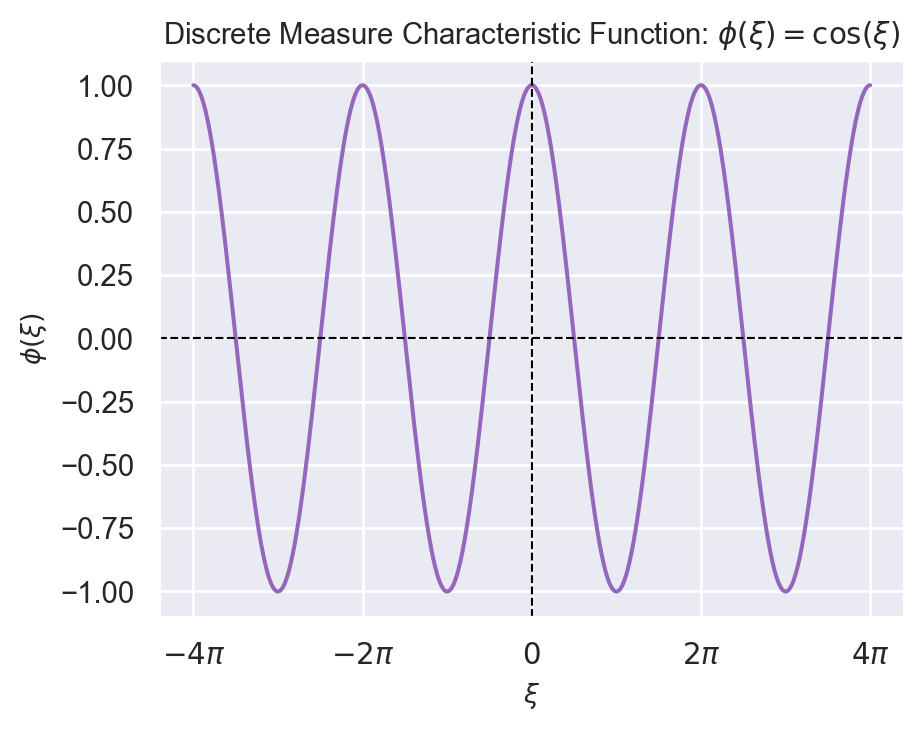

import matplotlib.pyplot as plt
import numpy as np
import seaborn as sns
sns.set_theme(style="darkgrid", palette="muted")53 Lecture 25.1: The Riemann-Lebesgue Lemma
53.1 Overview & Intuition
We examine characteristic functions (Fourier transforms) of probability measures \(\mu\) on \(\mathbb{R}^d\).
- If \(\mu\) is an absolutely continuous probability measure with respect to Lebesgue measure \(\lambda_d\), so that \(d\mu = f \, d\lambda_d\) with \(f \in L^1(\mathbb{R}^d)\), then its characteristic function \(\hat{f}(\xi) \to 0\) as \(\|\xi\| \to \infty\).
- By contrast, a purely atomic probability measure need not have a characteristic function that decays to zero at infinity. For example, \(\frac12(\delta_1+\delta_{-1})\) has characteristic function \(\cos(\xi)\).
53.1.1 Characteristic Functions of Selected Distributions
Below are four classic characteristic functions representing both continuous and discrete probability distributions:
- Uniform Distribution: If \(X\) is uniform on \([-1,1]\), its density is \(f(x)=\frac12\mathbf{1}_{[-1,1]}(x)\) and its characteristic function is the sinc function: \[ \hat{f}(\xi) = \begin{cases} \dfrac{\sin(\xi)}{\xi}, & \xi\ne0,\\ 1, & \xi=0. \end{cases} \]
x = np.linspace(-16 * np.pi, 16 * np.pi, 1000)
y = np.sinc(x / np.pi)
plt.figure(figsize=(5, 4))
plt.plot(x, y, color='#1f77b4', linewidth=1.5)
plt.axhline(0, color='black', linewidth=0.8, linestyle='--')
plt.axvline(0, color='black', linewidth=0.8, linestyle='--')
plt.title(r'Sinc Function: $\hat{f}(\xi) = \frac{\sin(\xi)}{\xi}$', fontsize=11)
plt.xlabel(r'$\xi$', fontsize=10)
plt.ylabel(r'$\hat{f}(\xi)$', fontsize=10)
plt.xticks(
[-16*np.pi, -12*np.pi, -8*np.pi, -4*np.pi, 0, 4*np.pi, 8*np.pi, 12*np.pi, 16*np.pi],
[r'$-16\pi$', r'$-12\pi$', r'$-8\pi$', r'$-4\pi$', r'$0$', r'$4\pi$', r'$8\pi$', r'$12\pi$', r'$16\pi$']
)
plt.tight_layout()
plt.show()
- Cauchy Distribution (Continuous, non-smooth derivative at 0): \[\hat{f}(\xi) = e^{-|\xi|}\]
x = np.linspace(-np.pi, np.pi, 1000)
y = np.exp(-np.abs(x))
plt.figure(figsize=(5, 4))
plt.plot(x, y, color='#2ca02c', linewidth=1.5)
plt.axhline(0, color='black', linewidth=0.8, linestyle='--')
plt.axvline(0, color='black', linewidth=0.8, linestyle='--')
plt.title(r'Cauchy Characteristic Function: $\hat{f}(\xi) = e^{-\vert{}\xi\vert{}}$', fontsize=11)
plt.xlabel(r'$\xi$', fontsize=10)
plt.ylabel(r'$\hat{f}(\xi)$', fontsize=10)
plt.xticks(
[-np.pi, -3*np.pi/4, -np.pi/2, -np.pi/4, 0, np.pi/4, np.pi/2, 3*np.pi/4, np.pi],
[r'$-\pi$', r'$-\frac{3\pi}{4}$', r'$-\frac{\pi}{2}$', r'$-\frac{\pi}{4}$', r'$0$', r'$\frac{\pi}{4}$', r'$\frac{\pi}{2}$', r'$\frac{3\pi}{4}$', r'$\pi$']
)
plt.tight_layout()
plt.show()
- Standard Normal Distribution \(\mathcal{N}(0, 1)\) (Smooth Gaussian decay): \[\hat{f}(\xi) = e^{-\xi^2 / 2}\]
x = np.linspace(-2 * np.pi, 2 * np.pi, 1000)
y = np.exp(-x**2 / 2)
plt.figure(figsize=(5, 4))
plt.plot(x, y, color='#d62728', linewidth=1.5)
plt.axhline(0, color='black', linewidth=0.8, linestyle='--')
plt.axvline(0, color='black', linewidth=0.8, linestyle='--')
plt.title(r'Gaussian Characteristic Function: $\hat{f}(\xi) = e^{-\xi^2 / 2}$', fontsize=11)
plt.xlabel(r'$\xi$', fontsize=10)
plt.ylabel(r'$\hat{f}(\xi)$', fontsize=10)
plt.xticks(
[-2*np.pi, -3*np.pi/2, -np.pi, -np.pi/2, 0, np.pi/2, np.pi, 3*np.pi/2, 2*np.pi],
[r'$-2\pi$', r'$-\frac{3\pi}{2}$', r'$-\pi$', r'$-\frac{\pi}{2}$', r'$0$', r'$\frac{\pi}{2}$', r'$\pi$', r'$\frac{3\pi}{2}$', r'$2\pi$']
)
plt.tight_layout()
plt.show()
- Symmetric Discrete Measure \(\mu = \frac{1}{2}\delta_1 + \frac{1}{2}\delta_{-1}\) (Purely oscillatory, no decay): \[\phi(\xi) = \cos(\xi)\]
x = np.linspace(-4 * np.pi, 4 * np.pi, 1000)
y = np.cos(x)
plt.figure(figsize=(5, 4))
plt.plot(x, y, color='#9467bd', linewidth=1.5)
plt.axhline(0, color='black', linewidth=0.8, linestyle='--')
plt.axvline(0, color='black', linewidth=0.8, linestyle='--')
plt.title(r'Discrete Measure Characteristic Function: $\phi(\xi) = \cos(\xi)$', fontsize=11)
plt.xlabel(r'$\xi$', fontsize=10)
plt.ylabel(r'$\phi(\xi)$', fontsize=10)
plt.xticks(
[-4*np.pi, -2*np.pi, 0, 2*np.pi, 4*np.pi],
[r'$-4\pi$', r'$-2\pi$', r'$0$', r'$2\pi$', r'$4\pi$']
)
plt.tight_layout()
plt.show()
53.2 The Riemann-Lebesgue Lemma
Theorem 53.1 (Riemann-Lebesgue Lemma) Let \(d\in\mathbb{N}\) and let \(\lambda_d\) denote Lebesgue measure on \(\mathbb{R}^d\). If \(f \in L^1(\mathbb{R}^d, \mathcal{B}_{\mathbb{R}^d}, \lambda_d)\), then its Fourier transform \[ \hat{f}(\xi) = \int_{\mathbb{R}^d} f(x) e^{i \langle x, \xi \rangle} d\lambda_d(x). \] belongs to \(C_0(\mathbb{R}^d)\). That is, \(\hat{f}\) is continuous and \[ \lim_{\|\xi\| \to \infty} |\hat{f}(\xi)| = 0. \]
Some Observations:
The central message of the Riemann-Lebesgue Lemma is that the Fourier transform of an integrable function vanishes at infinity.
More precisely, if \(f\in L^1(\mathbb R^d)\), then \(\hat f(\xi)=\int_{\mathbb R^d}f(x)e^{i\langle x,\xi\rangle}\,dx\) satisfies \[ \boxed{\|\xi\|\to\infty \quad\Longrightarrow\quad \hat f(\xi)\to0.} \]
The factor \(e^{i\langle x,\xi\rangle}\) oscillates increasingly rapidly as \(\|\xi\|\) becomes large. When integrated against an integrable function \(f(x)\), the positive and negative/complex oscillations increasingly cancel each other: \[ \begin{aligned} &\text{high frequency} \quad\Longrightarrow\quad \text{rapid oscillation} \\ &\Longrightarrow\quad \text{cancellation} \quad\Longrightarrow\quad \hat f(\xi)\approx0. \end{aligned} \]
This has a particularly important interpretation for characteristic functions. If \(X\) has an \(L^1\) density \(f\), then \(\varphi_X(\xi)=\hat f(\xi)\) so \[ \boxed{\varphi_X(\xi)\to0 \qquad\text{as }\|\xi\|\to\infty.} \] However, the converse is not true: a characteristic function can tend to zero even when the distribution does not have a density. Thus the Riemann–Lebesgue lemma gives a sufficient condition, not a characterization.
The lemma expresses a fundamental principle of Fourier analysis: \[ \boxed{ L^1(\mathbb R^d) \overset{\mathcal F}{\longrightarrow} C_0(\mathbb R^d). } \] That is, Fourier transformation converts integrable functions into continuous functions that vanish at infinity.
53.3 Proof of the Riemann-Lebesgue Lemma
The proof proceeds in three main steps:
53.3.1 Step 1: Smooth Compactly Supported Functions (\(f \in C_c^\infty(\mathbb{R}^d)\))
Assume first that \(f \in C_c^\infty(\mathbb{R}^d)\). Let \(\xi\ne0\) and choose \(j\) such that \(|\xi_j|=\|\xi\|_\infty\), so that \(\xi_j\ne0\). Because \(f\) is continuous with compact support, it is integrable. Hence Fubini’s theorem applies, and \[ \hat f(\xi) = \int_{\mathbb R^{d-1}} \left[ \int_{\mathbb R} f(x_j,x_{-j}) e^{i x_j\xi_j} \,dx_j \right] e^{i\sum_{k\neq j}x_k\xi_k} \,dx_{-j}. \] Now focus on the inner integral \(I(x_{-j}) = \int_{\mathbb R} f(x_j,x_{-j})e^{i x_j\xi_j}\,dx_j\). Since \(\xi_j\neq0\), \[ e^{i x_j\xi_j} = \frac{1}{i\xi_j} \frac{d}{dx_j}e^{i x_j\xi_j}. \] Therefore \[ I(x_{-j}) = \frac{1}{i\xi_j} \int_{\mathbb R} f(x_j,x_{-j}) \frac{d}{dx_j}e^{i x_j\xi_j}\,dx_j. \] Apply the one-dimensional integration-by-parts formula \(\int u\,dv=uv-\int v\,du\) with \(u=f(x_j,x_{-j})\) and \(dv=\frac{d}{dx_j}e^{i x_j\xi_j}\,dx_j\). Then \[ du= \frac{\partial f}{\partial x_j}(x_j,x_{-j})\,dx_j, \qquad v=e^{i x_j\xi_j}. \] Thus \[ \begin{aligned} I(x_{-j}) &= \frac{1}{i\xi_j} \left[ f(x_j,x_{-j})e^{i x_j\xi_j} \right]_{-\infty}^{\infty}\\ &\qquad -\frac{1}{i\xi_j} \int_{\mathbb R} \frac{\partial f}{\partial x_j}(x_j,x_{-j}) e^{i x_j\xi_j}\,dx_j. \end{aligned} \] Here the boundary term vanishes because \(f\) has compact support; that is, \(f(x_j,x_{-j}) = 0\) for \(|x_j|\) sufficiently large. Consequently, \(\left[ f(x_j,x_{-j})e^{i x_j\xi_j} \right]_{-\infty}^{\infty} =0\). Therefore, \[ I(x_{-j}) = -\frac{1}{i\xi_j} \int_{\mathbb R} \frac{\partial f}{\partial x_j}(x_j,x_{-j}) e^{i x_j\xi_j}\,dx_j. \] Substitute \(I(x_{-j})\) back into the \(d\)-dimensional integral yields \[ \hat{f}(\xi) = \int_{\mathbb{R}^d} f(x) e^{i \langle x, \xi \rangle} d\lambda_d(x) = \frac{1}{-i \xi_j} \int_{\mathbb{R}^d} \frac{\partial f}{\partial x_j}(x) e^{i \langle x, \xi \rangle} d\lambda_d(x) \] Taking absolute values yields: \[ |\hat{f}(\xi)| \le \frac{1}{|\xi_j|} \int_{\mathbb{R}^d} \left| \frac{\partial f}{\partial x_j}(x) \right| d\lambda(x) = \frac{1}{|\xi_j|} \left\| \frac{\partial f}{\partial x_j} \right\|_{L^1} \]
Since \(\|\xi\|_\infty = \max_{1 \le j \le d} |\xi_j| \ge \frac{1}{\sqrt{d}} \|\xi\|_2\) and \(|\xi_j|=\|\xi\|_\infty\), consequently: \[|\hat{f}(\xi)| \le \frac{\sqrt{d}}{\|\xi\|_2} \max_{1 \le j \le d} \left\| \frac{\partial f}{\partial x_j} \right\|_{L^1} \xrightarrow{\|\xi\| \to \infty} 0\]
Thus, \(\hat{f}(\xi) = O(\|\xi\|^{-1}) \to 0\) as \(\|\xi\| \to \infty\) for all \(f \in C_c^\infty(\mathbb{R}^d)\).
53.3.2 Step 2: Density of \(C_c^\infty(\mathbb{R}^d)\) in \(L^1(\mathbb{R}^d)\)
We must extend the result to arbitrary functions \(f \in L^1(\mathbb{R}^d)\) by showing \(C_c^\infty(\mathbb{R}^d)\) is dense in \(L^1(\mathbb{R}^d)\).
Magnitude truncation: Assume \(f\) is measurable and finite almost everywhere. By the Dominated Convergence Theorem (DCT), \[f_M=f\mathbf{1}_{\{|f|\le M\}}\longrightarrow f \quad\text{in }L^1(\mathbb{R}^d),\] because \(f_M\to f\) almost everywhere and \(|f_M-f|\le 2|f|\in L^1\). Thus, it is enough to approximate bounded measurable functions.
Support truncation: Choose \(R>0\) and put \(K=B_R\). Define \(f_R=f_M\mathbf{1}_K\). Again by DCT, \[f_R\longrightarrow f_M \quad\text{in }L^1(\mathbb{R}^d)\] as \(R\to\infty\), because \(f_R\to f_M\) almost everywhere and \(|f_R-f_M|\le |f_M|\in L^1\). Thus, it is enough to approximate bounded functions supported in \(K\).
Dynkin multiplicative-systems argument: We use the open ball \(K=B_R\) rather than its closure so that the approximating functions can be chosen with support inside \(K\). This causes no loss because \(\lambda_d(\partial B_R)=0\). Define \[ C_x^\infty(K):=C_c^\infty(K) \] and set \[ \begin{aligned} &\mathbb M:=C_x^\infty(K),\\ &\mathbb H:=\left\{h\in\mathbb B(K):\exists(\psi_n)\subset\mathbb M\text{ with } \|h-\psi_n\|_{L^1(K,\lambda_d)}\to0\right\}. \end{aligned} \] Here \(\mathbb B(K)\) denotes the bounded Borel-measurable real-valued functions on \(K\).
We verify the hypotheses of Theorem 29.1:
- \(\mathbb H\) is a vector subspace: sums and scalar multiples of approximating sequences still approximate in \(L^1(K)\).
- \(1\in\mathbb H\), since \(1|_K\in\mathbb M\).
- \(\mathbb H\) is closed under bounded convergence. If \(h_n\in\mathbb H\), \(|h_n|\le C\), and \(h_n\to h\) pointwise on \(K\), then \(|h_n-h|\le2C\). Since \(\lambda_d(K)<\infty\), DCT gives \(\|h_n-h\|_{L^1(K)}\to0\). Choosing, for each \(n\), \(\psi_n\in\mathbb M\) with \(\|h_n-\psi_n\|_{L^1(K)}<1/n\) shows that \(h\in\mathbb H\).
- \(\mathbb M\) is a multiplicative system, because the product of two compactly supported smooth functions in \(K\) again belongs to \(C_c^\infty(K)\).
- \(\mathbb M\subseteq\mathbb H\), by using a constant approximating sequence.
Finally, \(\sigma(\mathbb M)=\mathcal B(K)\). Every element of \(\mathbb M\) is Borel measurable, so \(\sigma(\mathbb M)\subseteq\mathcal B(K)\). Conversely, choose \(\chi_n\in C_c^\infty(K)\) with \(\chi_n=1\) on \(B_{R-1/n}\) for all sufficiently large \(n\). For each coordinate map \(\pi_j(x)=x_j\), the functions \(g_{j,n}=\chi_n\pi_j\) belong to \(\mathbb M\) and satisfy \(g_{j,n}(x)\to x_j\) for every \(x\in K\). Thus each coordinate map is \(\sigma(\mathbb M)\)-measurable, and \(\mathcal B(K)=\sigma(\pi_1,\ldots,\pi_d)\subseteq\sigma(\mathbb M)\).
Dynkin’s Multiplicative Systems Theorem now gives \(\mathbb B(K)\subseteq\mathbb H\). Applying this to the bounded Borel function \(f_R|_K\) yields a function \(\psi\in C_c^\infty(K)\) with \[\|f_R-\psi\|_{L^1(\mathbb R^d)}=\|f_R|_K-\psi\|_{L^1(K)}<\varepsilon,\] because both \(f_R\) and \(\psi\) vanish outside \(K\).
53.3.3 Step 3: Synthesis (\(\varepsilon / 2\) Argument)
Given \(f \in L^1(\mathbb{R}^d)\) and \(\varepsilon > 0\):
- Choose \(\psi \in C_c^\infty(\mathbb{R}^d)\) such that \(\|f - \psi\|_{L^1} < \frac{\varepsilon}{2}\).
- For any \(\xi \in \mathbb{R}^d\), estimate: \[|\hat{f}(\xi)| \le |\hat{f}(\xi) - \hat{\psi}(\xi)| + |\hat{\psi}(\xi)| = |\widehat{f - \psi}(\xi)| + |\hat{\psi}(\xi)|\]
- Note that \(|\widehat{f - \psi}(\xi)| \le \|f - \psi\|_{L^1} < \frac{\varepsilon}{2}\).
- By Step 1, \(|\hat{\psi}(\xi)|\to0\) as \(\|\xi\|\to\infty\), so there exists \(R > 0\) such that for all \(\|\xi\| \ge R\), \(|\hat{\psi}(\xi)| < \frac{\varepsilon}{2}\).
Combining these inequalities: \[|\hat{f}(\xi)| < \frac{\varepsilon}{2} + \frac{\varepsilon}{2} = \varepsilon \quad \text{for all } \|\xi\| \ge R\]
Hence, \(\lim_{\|\xi\| \to \infty} |\hat{f}(\xi)| = 0\).
Continuity of \(\hat{f}\): For any \(\xi_0 \in \mathbb{R}^d\), we have \(|\hat{f}(\xi) - \hat{f}(\xi_0)| \le \int_{\mathbb{R}^d} |f(x)| \, |e^{i\langle x, \xi\rangle} - e^{i\langle x, \xi_0\rangle}| \, d\lambda(x)\). As \(\xi \to \xi_0\), the integrand converges pointwise to \(0\) and is dominated by \(2|f(x)| \in L^1\), so DCT gives \(\hat{f}(\xi) \to \hat{f}(\xi_0)\). Thus \(\hat{f} \in C_0(\mathbb{R}^d)\), completing the proof.